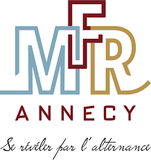
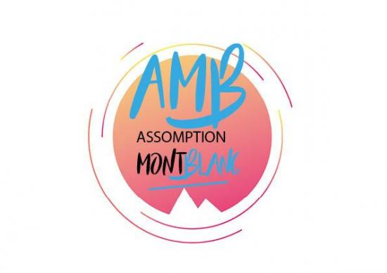

Ayant travaillé au seins d’un réseau de distribution d’articles de sport pendant 10 ans,
j’ai acquis une solide expérience dans les relations professionnelles internationales.
Moi même j’ai souvent pu constater l’importance et l’efficience d’une structure numérique bien pensée
au sein d’une entreprise ou d’un projet.
J’ai donc décidé de me reconvertir dans les métiers de la conception et du développement numérique
afin de croiser ces nouvelles connaissances avec mon expérience du réseau b-to-b sur une distribution nationale.

.png)
.png)
.png)
.png)
.png)
.png)
.png)
.png)
.png)
Depuis l’atelier, auprès des professionnels de la montagne, jusqu’aux salles de réunion des fabricants, cette position pivot m’a permis de comprendre et d’anticiper les enjeux de la conception et de l’industrialisation d’un produit. C’est au travers de l’optimisation des outils numériques que j’ai pu assurer la meilleure qualité de service face aux grandes quantités de requêtes due au développement et à la saisonnalité de notre activité.
2014 - 2024
Superviser le traitement rapide et précis des demandes de garantie.
Assurer une assistance clientèle de haute qualité.
Encadrer et développer l’équipe du service après-vente.
Réaliser des interventions techniques sur les équipements de ski.
Élaborer et actualiser les politiques de garantie.
Collaborer étroitement avec d’autres départements pour résoudre les problèmes.
Produire et analyser des rapports de performance et de réclamations.
Gérer les stocks et la logistique des pièces de rechange.
Analyser les retours clients pour améliorer les produits.
Mettre en place des processus d’amélioration continue.
Accueillir et conseiller la clientèle.
Améliorer l’objectif satisfaction client.
Atteindre et sécuriser le chiffre d’affaires.
Assurer la location et la facturation.
Préparer une commande de base et maîtriser un budget.
2011 - 2013
Accueil (téléphonique/physique).
Vente et organisation sur +40 activités outdoor.
Gestion de caisse et vente de forfait.
2008 - 2012
Cuisinier Concession JEEP PNA Seynod – 2013 – 2014
Chauffeur tournée Parapente – Les Ailes du Mt Blanc « Chamonix » 2006
Agent polyvalent Hôtellerie tourisme – UK Oxford (3 mois/2006) – Chapelle d’Abondance (2 saisons/2004.2005)
Préparateur Commande et manutention – CSD (6 mois/2001) – Chabert (6 mois/2002)
2006 - 2008
Concepteur Developpeur Web Avancé 2024
Formation continu Perfectionnement Skiman CNPC 2012
BTS AGTL (Animation Gestion Tourisme Locale) 2008 - 2010
BAC PRO SMR (Service aux Personnes en Milieu rurale) 2005 – 2008
BEP Logistique et commercialisation 2003 – 2005
Lecture, Astro-physique, Science-Fiction, Culture Geek
Snorkeling, Rando, Trek, Course à pied, Paddle
Photograhie, Montage-vidéo
Ski, Snowboard, Splitboard, Skate, Longboard